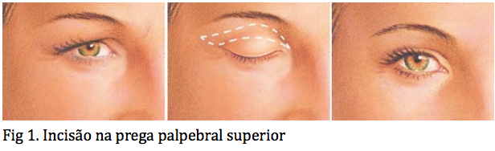

Este aplicativo é um produto final do Mestrado Profissional cursado em 2015/16 na UNIFESP
Desenvolvido por Dr. José Carvalho Jr
Coordenadores:
Prof. Elvio Bueno Garcia
Profa. Leila Blanes
Orientadora:
Profa. Alessandra Haddad
Co-orientadora:
Profa. Dra. Lydia Masako Ferreira
A abdominoplastia é o nome da cirurgia que remove o excesso de pele e de gordura que se encontra entre o umbigo e o pubis (ou cicatriz de cesárea). Na maioria dos casos os músculos do abdome são aproximados através de suturas (costura com fios) criando um perfil abdominal mais suave e tonificado. Apesar de alguns pacientes praticarem atividade física, manterem bom controle alimentar e até um peso adequado, existem algumas situações que levam o abdome a se tornar frouxo e flácido como: pós gravidez, envelhecimento, grandes variações de peso (efeito sanfona), hereditariedade (componente familiar) e cirurgias abdominais prévias. Esse procedimento não elimina as estrias abdominais, porém são retiradas aquelas que estão localizadas no excesso de pele do abdomen inferior que será removido.
A incisão é feita em forma de meia-lua e seu comprimento depende do excesso de pele e de gordura a serem removidos.
De maneira geral você será um bom candidato a abdominoplastia se:
• Você estiver fisicamente saudável e com peso estável. Indivíduos dentro do peso ou levemente acima, com pouca gordura extra e mais flacidez de pele no abdome inferior são os melhores candidatos; esse procedimento não é adequado para quem estiver obeso. A abdominoplastia não é um procedimento para perda de peso.
• Você não for tabagista. Fumar atrasa o processo de cicatrização e aumenta o risco de complicações graves durante e após a cirurgia. Se você fuma, você deve parar, pelo menos, seis semanas antes da cirurgia.
• Você apresenta excesso de pele , fraqueza da musculatura abdominal, ou ambos devido ao próprio envelhecimento, pós gestação ou devido a grande flutuação de peso.
• Você possuir uma expectativa realista.
É importante lembrar que a decisão de se realizar uma abdominoplastia deve ser tomada baseada em um desejo próprio e não para agradar outra pessoa ou para se enquadrar em uma imagem de corpo perfeito. Outro aspecto importante são os planos pós cirurgia, apesar dos resultados serem tecnicamente permanentes eles podem se alterar caso ocorra perda ou ganho exagerado de peso, bem como na gravidez. Os músculos que são aproximados durante uma abdominoplastia podem se separar novamente durante a futura gravidez levando a diástase (separação) dos músculos do abdome. Por isso, é aconselhável que mulheres com planos de engravidar tenham suas cirurgias de abdominoplastia adiadas.
O seu cirurgião lhe passará as instruções completas de pré-operatórios, responderá a quaisquer perguntas que você possa ter, coletará uma história clínica detalhada e realizará um exame físico para determinar sua indicação para a cirurgia.
Antes do seu procedimento, o cirurgião pode pedir para você:
•Pare de fumar bem antes de se submeter a cirurgia.
•Evite tomar aspirina, certos medicamentos anti-inflamatórios e alguns medicamentos fitoterápicos que podem causar aumento de sangramento.
•Independentemente do tipo de cirurgia a ser realizada, a hidratação é muito importante, antes e depois da cirurgia para recuperação segura.
•Se ele recomendar um peso alvo ou alterações de estilo de vida, faça o seu melhor para alcançá-los à fim de obter os melhores resultados e minimizar as chances de complicações.
Prepare a sua casa antes da cirurgia para sua recuperação pós operatória:
•Se você tem filhos, coloque alguém para cuidar deles.
•Se você não tiver alguém para preparar todas as suas refeições, comprar refeições prontas de fácil reaquecimento ou cozinhar a sua própria comida antes da cirurgia e congelá-los para aquecer no pós operatório. Escolha refeições saudáveis e lanches.
•Coloque todos os seus alimentos e produtos de higiene pessoal de fácil acesso, de preferência ao nível do quadril, para que você não tenha que se esticar, curvar-se ou levantar para alcança-los.
•Reservar em sua mesa de cabeceira um lugar para seus medicamentos, de preferência com um organizador de medicação (com compartimentos dia e hora da dose).
•Coloque garrafas de água e biscoitos, baixo teor de sódio em sua cabeceira.
•Certifique-se que seus controles remotos têm pilhas novas ou estão completamente carregadas.
•Reserve material de leitura e filmes com antecedência para que você tenha algo para fazer quando não estiver dormindo.
•Deixe seu celular, o carregador e o cabo de alimentação próximo a cama. Você pode usar seu telefone celular em caso de emergência e também para ligar ou mandar uma mensagem de texto para seu cuidador.
Etapa 1 - Anestesia
Medicamentos são administrados para o seu conforto durante o procedimento cirúrgico. As opções incluem sedação intravenosa e anestesia geral. Seu médico irá recomendar a melhor opção para você.
Etapa 2 – Incisão
O procedimento completo da cirurgia de abdominoplastia requer uma incisão horizontal orientada na área entre a linha do púbis e umbigo.
A forma e o comprimento da incisão serão determinados pelo grau de correção necessário. Através desta incisão, os músculos abdominais enfraquecidos são reparados e suturados, enquanto o excesso de gordura, de tecidos e de pele são removidos. Uma segunda incisão, em torno do umbigo, pode ser necessária para reposiciona-lo e remover o excesso de pele na parte superior do abdômen.
Etapa 3 – Fechando as incisões
Suturas, adesivos de pele, fitas ou clipes são usados para fechar as incisões na pele.
Recuperação pós cirurgia
Uma vez que a cirurgia é concluída, você será levado para uma área de recuperação pós anestésica onde será acompanhado de perto e monitorizado. Se você foi submetido a anestesia geral, você deve ter um cuidador para ajudá-lo com suas atividades nas primeiras 24 horas. Se o procedimento requer uma pernoite, após despertar na área de recuperação pós anestésica você será transportado para um quarto/apartamento onde passará a noite.
Pós operatório imediato
O que esperar logo após o procedimento:
• Assim que o efeito da anestesia for passando você pode sentir-se tonto, desorientado e nauseado. Estas sensações devem passar dentro de algumas horas, embora alguns tipos de remédios para diminuir a dor podem provocar esse mesmo efeito.
• Geralmente após a anestesia e antes de começar a cirurgia é passado uma sonda vesical de demora que é uma sonda introduzida através da uretra (canal por onde sai a urina) e que irá drenar a urina da bexiga para um coletor. Essa sonda, geralmente é retirada logo após a cirurgia ou pode ser retirada no dia seguinte pela de manhã.
• Se você voltar para casa no mesmo dia, você precisará de alguém para dirigir. Aliás, o retorno ao volante é liberado em torno de 3 semanas. Dependendo da extensão do procedimento, você pode ser obrigado a passar uma ou duas noites no hospital se recuperando da cirurgia.
• Logo após uma abdominoplastia, é esperado que o seu abdome fique um pouco dolorido. Qualquer dor que você venha sentir pode ser controlada com medicamentos analgésicos.
• A maioria dos pacientes necessitam de alguns dias de repouso na cama, mesmo aqueles que voltam para casa no mesmo dia da cirurgia. A posição na cama deve ser de barriga pra cima, cabeceira elevado e pernas semi fletidas com o objetivo de diminuir a tensão na incisão cirúrgica.
• É comum a utilização de meia elástica compressiva anti-trombo para as pernas, que deve ser colocada antes da cirurgia, permanecendo no pós operatório em torno de 7 a 10 dias. Essa meia pode ser retirada no momento do banho, retornando seu uso a seguir.
• O seu local de incisão será coberto com um curativo para manter a área limpa e protegida. Você também deve vestir uma malha elástica abdominal para reduzir o inchaço e fornecer suporte para a pele, devido a sua compressão. Você vai usar essa malha por um período médio de 4 a 6 semanas. A malha só é retirada para se tomar banho e deve retornar o uso após a higiene. É importante lembrar que a malha deve exercer o mínimo de compressão possível, suficiente apenas para dar estabilidade e forma.
• Dependendo da extensão e da técnica de sua abdominoplastia, o cirurgião pode optar por deixar ou não um ou dois drenos logo abaixo da incisão para drenar o líquido que pode se acumular. Caso o cirurgião opte por drenar será solicitado a você que os esvazie em casa, uma vez por dia, anotando em um papel o volume drenado para que seu cirurgião possa analisar a hora certa de retirar os drenos. Normalmente são removidos entre 3 a 14 dias após sua cirurgia, dependendo da quantidade de líquido que está sendo coletado.
• Se a sutura da pele for feita com fios inabsorvíveis (fios que o corpo não consegue absorver), como o Nylon, esses serão removidos tipicamente dentro da primeira ou da segunda semana (fios absorvíveis não precisam ser removidos).
• O tipo de curativo e o uso ou não de pomadas sobre a incisão é variável e depende das orientações de cada cirurgião.
• Alguns cirurgiões podem utilizar a cola cirúrgica para o fechamento final da ferida operatória o que torna mais fácil o cuidado pós operatório, porém geralmente apresenta um custo adicional.
Efeitos comuns experimentados por pacientes de abdominoplastia incluem vermelhidão, hematomas e inchaço. Esses efeitos geralmente desaparecem em 1 a 3 semanas, enquanto seu corpo se ajusta aos novos contornos e ocorre a cicatrização das incisões.
Período de recuperação após uma abdominoplastia
A recuperação completa de um procedimento de abdominoplastia ocorre ao longo de um período de seis meses ou mais. Nos primeiros dois dias, controlar a dor e evitar complicações é a sua prioridade. A primeira semana será a mais delicada, e você ainda sentirá que está se recuperando durante duas a três semanas. Depois de algumas semanas, recuperar a mobilidade e aptidão torna-se importante. Depois de vários meses, você pode começar a avaliar o resultado estético de sua cirurgia. É importante lembrar que o tempo de recuperação varia muito entre cada paciente.
• Os primeiros dias após a cirurgia, você deve descansar tranquilamente. Lembre-se, você não deve tomar aspirina ou certas medicações anti coagulantes, salvo em ocasiões especiais. Para evitar tosse e sangramento, não fumar após o procedimento. Não ingerir bebida alcoólica pelo menos nos primeiros cinco dias após a cirurgia ou enquanto estiver usando medicação que apresente alguma interação com o álcool.
• Ter à disposição alguém para ajudá-lo a caminhar e fazer as atividades básicas diárias e ajudar na administração das medicações, pelo menos nos dois primeiros dias após a cirurgia.
Certifique-se de continuar contando com ajuda em casa - isso é fundamental para uma boa evolução. Você vai se sentir tentado a ajudar em algumas tarefas básicas de casa, já que não vai sentir muita dor, porém não estará preparado por pelo menos sete a dez dias. Você deve evitar qualquer trabalho pesado (como pegar seus filhos ou levantar utensílios domésticos pesados) durante quatro a seis semanas. Se você tem filhos pequenos, você deve colocar alguém para cuidar deles por, pelo menos, duas semanas.
Lembre-se que na região abdominal inferior onde foi realizado a cirurgia haverá uma redução da sensibilidade, assim atente-se para não colocar compressas quentes ou gelo nesse local evitando, assim, lesões na pele sem que perceba.
Os dois primeiros dias são os mais desconfortáveis, por isso, se você for orientado a tomar medicamentos de horário, tome-os rigorosamente. O desconforto geralmente melhora de cinco a sete dias.
Você provavelmente vai voltar para o acompanhamento com seu cirurgião no prazo de três a cinco dias. Durante esta visita, o médico pode remover os drenos, a depender de sua avaliação.
Procure o seu cirurgião imediatamente se você notar um aumento no inchaço, na dor, na vermelhidão, na quantidade de líquido drenado, ou sangramento importante na área cirúrgica, ou se desenvolver febre, tontura, náuseas e vômitos. Outros sinais de alerta incluem falta de ar, dores no peito, e um batimento cardíaco anormal.
Você deve levantar e andar um dia após a cirurgia, embora lentamente e em posição encurvada. É importante caminhar para reduzir o edema e para prevenir trombose venosa profunda nas pernas. No entanto, deve-se evitar o exercício extenuante por quatro a seis semanas, uma vez que pode aumentar a retenção de fluidos na área cirúrgica.
Planeje pelo menos duas semanas de folga do trabalho, a depender das exigências físicas de seu trabalho.
Faça um esforço para retornar gradualmente à sua rotina normal ao invés de um retorno imediato.
A decisão de se submeter a uma cirurgia plástica é extremamente pessoal, e você terá que decidir se os benefícios vão atingir seus objetivos e se os riscos e as potenciais complicações dessa cirurgia são aceitáveis. Você será solicitado a assinar o termo de consentimento para garantir que você compreendeu totalmente o procedimento e quaisquer riscos relacionados a ele.
Os riscos da abdominoplastia podem incluir:
• Cicatrizes desfavoráveis,
• Sangramento (hematoma)
• Infecção
• Acúmulo de líquido (seroma)
• Riscos anestésicos
• Necrose da pele
• Dormência ou demais alterações de sensibilidade da pele
• Despigmentação da pele e/ou inchaço prolongado
• Assimetria (um lado não ficar exatamente igual ao outro)
• Deiscência (reabertura de uma ferida previamente fechada)
• Necrose do tecido adiposo
• Danos em estruturas mais profundas tais como nervos, vasos sanguíneos e músculos
• Dor, que pode perdurar
• Trombose venosa profunda, complicações cardíacas e pulmonares
• Fios de sutura podem espontaneamente emergir na pele, tornando-se visíveis ou causar irritação que exijam sua remoção
• Possibilidade de novo procedimento cirúrgico
Esses riscos e outros serão amplamente debatido antes de você assinar seu termo de consentimento. É importante que você aborde todas as suas dúvidas diretamente com seu cirurgião plástico.
A seleção do seu cirurgião plástico é muito importante e deve se basear em uma relação de mútua confiança. Alguns aspectos são essências para sua escolha, como:
• Educação, formação e certificação do cirurgião plástico
• Experiência cirúrgica realizando esse tipo de procedimento
• O seu nível de conforto, liberdade e confiança no cirurgião
Os membros da Sociedade Brasileira de Cirurgia Plástica ( SBCP) são treinados e qualificados para executar esse tipo de procedimento cirúrgico. Para saber quem são os cirurgiões plásticos na sua região certificados pela SBCP entre no site www2.cirurgiaplastica.org.br/encontre-um-cirurgiao/ ou baixe o aplicativo Cirurgia Plástica SBCP na Google Play ou na App Store.
Depois de encontrar um cirurgião plástico certificado pela SBCP, que é capacitado para realizar a cirurgia de abdominoplastia, você terá que marcar uma consulta para que possa ser avaliado por ele.
Durante sua primeira consulta, você terá a oportunidade de expressar qual é o seu real objetivo com a cirurgia. O seu cirurgião irá avaliar se você é um bom candidato à cirurgia e esclarecer qual será a melhor abordagem para você.
Você deve vir à consulta preparado para contar seus antecedentes médicos completo e responder a algumas perguntas como:
• Você tem algum problema de saúde ou alergias a medicamentos? Você está em tratamento para alguma doença?
• Você já fez alguma cirurgia anteriormente?
• Quais são os medicamentos, vitaminas ou suplementos fitoterápicos que você está usando?
• Você faz uso de anticoncepcional?
• Você faz uso de álcool, cigarro ou drogas recreativas?
• Qual é a sua história com quaisquer procedimentos estéticos não invasivos?
• Qual o resultado que você espera da cirurgia? Qual é a sua motivação principal para se submeter a uma abdominoplastia?
Seu cirurgião deverá também:
• Pedir para você olhar em um espelho e apontar exatamente o que você gostaria de melhorar com a cirurgia.
• Tirar fotos para seu registro médico.
• Avaliar o seu estado de saúde, incluindo condições de saúde prévias ou fatores de risco.
• Solicitar exames pré operatórios
• Avaliar a elasticidade e a flacidez da pele abdominal.
• Discutir o seu peso ideal, peso realista e peso atual e, se necessário, sugerir um programa de perda de peso antes da cirurgia.
• Discutir os seus planos relacionados com gravidezes futuras.
O sucesso e a segurança de sua abdominoplastia depende muito de sua franqueza durante sua consulta. Será feita uma série de perguntas sobre sua saúde, desejos e estilo de vida.
Lembre-se de fazer perguntas e tirar todas as suas dúvidas. Para ajudar, você pode usar como guia esta lista de perguntas a fazer para seu cirurgião plástico no dia da consulta:
• Você é especialista pela Sociedade Brasileira de Cirurgia Plástica?
• A instalação do centro cirúrgico em que você realiza suas cirurgias é autorizada pela Vigilância Sanitária?
• Sou um bom candidato a este procedimento?
• Como ficará meu abdômen após a gravidez?
• O que se espera de mim para que os melhores resultados sejam obtidos?
• Onde e como o procedimento será realizado?
• Qual o período de recuperação e quando posso retomar minhas atividades normais?
• Que tipo de ajuda vou precisar durante minha recuperação?
• Quais são os riscos e as complicações associados a este procedimento?
• Como são tratadas as complicações?
• Os resultados que eu estou buscando são razoáveis e realistas?
• Será que minhas cicatrizes serão visíveis? Onde se localizarão minhas cicatrizes?
• Que tipo de anestesia você recomendaria para mim?
• Quais são minhas opções se estiver insatisfeito com o resultado da cirurgia?
É muito importante compreender todos os aspectos de seu procedimento de abdominoplastia. É natural que sinta um pouco de ansiedade, principalmente com relação ao novo visual o que leva a um grau de stress antes da cirurgia. Não tenha vergonha de discutir esses sentimentos com seu cirurgião plástico.
O custo é sempre uma consideração em cirurgia eletiva. Os honorários de um cirurgião podem variar de acordo com a sua experiência e o tipo de procedimento realizado.
Os custos da cirurgia incluem:
• Honorários do cirurgião e auxiliares
• Gastos com hospital e centro cirúrgico
• Honorários do anestesista
• Exames médicos
• Cintas e malhas pós cirúrgicas
• Meias elásticas compressivas anti-trombo
Escolha o seu cirurgião com base na qualidade, formação e experiência e não simplesmente no custo.
Abdominoplastia: Procedimento cirúrgico para corrigir o excesso de pele flácida sobre o abdômen.
Diástase: Condição em que os músculos abdominais se separaram
Anestesia geral: Drogas e/ou gases utilizados durante a cirurgia para aliviar a dor e diminuir a consciência.
Hematoma: Acúmulo de sangue abaixo da pele.
Sedação intravenosa: Sedativos administrados por injeção na veia para ajudar a relaxar.
Lipoaspiração: Procedimento em que se aspira gordura por debaixo da superfície da pele.
Anestesia local: Medicamento injetado diretamente no local de incisão durante a cirurgia para aliviar a dor.
Suturas: Pontos utilizados pelos cirurgiões para manter a pele e o tecido unidos.
Trombose venosa profunda: Condição conhecida popularmente apenas por trombose, é a formação de um coágulo sanguíneo em uma ou mais veias localizadas da parte inferior do corpo, geralmente nas pernas.
Também chamado de mamoplastia de aumento é a cirurgia que envolve o uso de implantes mamários ou gordura, para aumentar o tamanho dos seus seios ou restaurar o volume da mama que foi perdido após a redução de peso ou gravidez.
A cirurgia visa proporcionar:
Mas lembre-se, a mamoplastia de aumento não corrige seios severamente caídos. Se a intenção é dar volume e elevar os seios que se apresentam muito flácidos, talvez seja necessário um procedimento associado que se chama mastopexia em que se retira a pele em excesso.
A mastopexia pode, muitas vezes, ser feito ao mesmo tempo em que se coloca o implante ou pode necessitar de uma operação separada. Seu cirurgião plástico irá ajudá-la a tomar essa decisão.
De maneira geral você será uma boa candidata a um aumento mamário se:
• Você acredita que seus seios são muito pequenos para o seu corpo
• Seus seios já estão totalmente desenvolvidos
• Você está insatisfeita com seus seios que estão perdendo a forma e o volume após uma gravidez ou grande perda de peso ou com o próprio envelhecimento
• Você está descontente com a parte superior do seu seio que aparenta estar "vazio"
• Um dos seus seios é visivelmente menor do que o outro
• Um ou ambos os seios não conseguiram desenvolver-se normalmente ou têm uma forma alongada
• Roupas que se encaixam em seu quadril são muito grandes na linha do busto.
Se você está fisicamente saudável, tem uma atitude positiva e expectativas realistas, você provavelmente será uma boa candidata para este procedimento.
O seu cirurgião lhe passará as instruções completas de pré-operatórios, responderá a quaisquer perguntas que você possa ter, coletará uma história clínica detalhada e realizará um exame físico para determinar se você possui indicação para a cirurgia.
Antes do seu procedimento, o cirurgião pode pedir para você:
• Parar de fumar bem antes de se submeter a cirurgia.
• Uma mamografia de base ou ultrassom das mamas para ajudar a detectar e rastrear qualquer alteração no seu tecido mamário
• Não tomar aspirina, certos medicamentos anti-inflamatórios e alguns medicamentos fitoterápicos que podem causar hemorragia
• Independentemente do tipo de cirurgia a ser realizada, a hidratação é muito importante, antes e depois da cirurgia para recuperação segura
Prepare a sua casa antes da cirurgia para sua recuperação pós operatória:
• Se você tem filhos, combine com alguém para cuidar deles.
• Se você não tiver alguém para preparar todas as suas refeições, comprar refeições prontas de fácil reaquecimento ou cozinhar a sua própria comida antes da cirurgia e congelá-los para aquecer no pós operatório. Escolha refeições e lanches saudáveis.
• Coloque todos os seus alimentos e produtos de higiene pessoal de fácil acesso, de preferência ao nível do quadril, para que você não tenha que se esticar, curvar-se ou levantar para alcança-los.
• Reservar em sua mesa de cabeceira um lugar para seus medicamentos, de preferência com um organizador de medicação (com compartimentos dia e hora da dose).
• Coloque garrafas de água e biscoitos em sua cabeceira.
• Certifique-se que seus controles remotos têm pilhas novas ou estão completamente carregadas.
• Reserve material de leitura e filmes com antecedência para que você tenha algo para fazer quando não estiver dormindo.
• Deixe seu celular, o carregador e o cabo de alimentação próximo a cama. Você pode usar seu telefone celular em caso de emergência e também para ligar ou mandar uma mensagem de texto para seu cuidador.
Etapa 1 - Anestesia
Medicamentos são administrados para o seu conforto durante o procedimento cirúrgico. As opções incluem sedação intravenosa e anestesia geral. Seu médico irá recomendar a melhor opção para você.
Etapa 2 – Incisão
As incisões (cortes) são feitas em áreas escondidas para minimizar cicatrizes visíveis. Você e seu cirurgião plástico irão discutir quais opções de incisão são mais apropriadas para o resultado desejado e qual tipo o cirugião tem maior experiência.
As opções de incisões incluem:
As tamanho das incisões variam de acordo com o tipo de implante mamário, o grau de aumento desejado, sua anatomia particular e a preferência paciente-cirurgião.
Etapa 3 – Inserindo e posicionando o implante mamário
Múltiplos fatores, incluindo sua anatomia e recomendações do seu cirurgião, vão determinar como seu implante mamário será inserido e posicionado. O implante é colocado em um espaço que pode ser:

• Logo atrás da glândula mamária e sobre o músculo peitoral (colocação subglandular )
ou
• Atrás do músculo peitoral ( colocação submuscular)
Etapa 4 – Fechamento das incisões
As incisões são fechadas com suturas, adesivo de pele ou cola cirúrgica.
Uma vez que a cirurgia é concluída, você será levado para uma área de recuperação pós anestésica onde será acompanhada de perto e monitorizada. Se você foi submetida a anestesia geral, você deve ter um cuidador para ajudá-la com suas atividades nas primeiras 24 horas. Se o procedimento requer uma pernoite, após despertar na área de recuperação pós anestésica você será transportado para um quarto/apartamento onde passará a noite.
Pós operatório imediato
O que esperar logo após o procedimento:
Após o procedimento de aumento de mama, será colocado um curativo cirúrgico e um sutiã de sustentação. Durante a cirurgia a mama é muito manipulada e tracionada o que pode ser doloroso no pós operatório, especialmente quando os implantes forem colocados embaixo do músculo peitoral. Normalmente, o incômodo doloroso é mais importante nas primeiras 48 horas após a cirurgia. O seu nível de dor normalmente irá diminuir a cada dia e pode ser controlado com medicamentos para a dor.
Você pode sentir seus seios apertados e sensíveis ao toque e sua pele pode estar quente. Você terá dificuldades em levantar os braços.
Algumas descolorações e inchaço irão ocorrer inicialmente, mas isso vai desaparecer rapidamente. A maioria do inchaço residual irá resolver dentro de um mês.
Assim que o efeito anestésico for passando, você pode ter alguma dor. Se a dor for extrema ou de longa duração, entre em contato com seu médico. Você também apresentará alguma vermelhidão e inchaço após a cirurgia. Contate o seu cirurgião para saber se a sua dor, vermelhidão e inchaço é normal ou um sinal de algum problema.
Período de recuperação após o aumento mamário
Você deve ser capaz de andar sem ajuda imediatamente após a cirurgia. É muito importante que você caminhe poucos minutos a cada hora para reduzir o risco de formação de trombose venosa nas pernas.
É extremamente importante que você siga todas as instruções de cuidados ao paciente fornecidos por seu cirurgião. Isso irá incluir informações sobre o uso de sutiã de malha elástica, cuidados com os drenos (se for colocado), tomar regularmente o antibiótico se prescrito, e o nível e tipo de atividade que é seguro. O cirurgião também irá fornecer instruções detalhadas sobre os sintomas normais que você vai experimentar e todos os sinais potenciais de intercorrências. É importante notar que o tempo de recuperação varia muito entre os indivíduos.
A primeira semana
• De dois a cinco dias, você pode sentir sua região torácica rígida e dolorida.
• Quaisquer curativos cirúrgicos serão removido dentro de alguns dias.
• Você deve ser instruída a usar um sutiã de sustentação elástico.
• Você terá permissão para tomar banho entre um e sete dias após a cirurgia.
• Se tiver suturas (fios) externas, essas serão removidas em cerca de sete a dez dias. Se o seu cirurgião tiver usado cola de tecido ou fita, ela cairá sozinha em uma ou duas semanas.
• Você será capaz de retornar ao trabalho em poucos dias a uma semana, dependendo da natureza do seu trabalho.
• Você deve evitar levantar, puxar ou empurrar qualquer coisa que provoque dor. Limitar as atividades extenuante e evitar torcer o tronco se isso lhe causar desconforto.
• Entre a primeira e a segunda semana, dependendo da avaliação do seu cirurgião, você poderá voltar a dirigir no volate.
Duas a seis semanas
Você deve minimizar as atividades físicas excessivas pelo menos durante as duas primeiras semanas após a cirurgia. Depois disso, ser extremamente cuidadosa com seus seios pelo menos durante o próximo mês. O momento para retornar às atividades sexuais será guiado pelo seu conforto.
Longo prazo
O seu cirurgião irá incentivá-la a agendar mamografias de rotina com a frequência recomendada para a sua faixa etária. Após realizado a cirurgia, você deve continuar a realizar o auto-exame da mama.
É importante saber que os resultados da cirurgia de implante de mama não são permanentes e os mesmos podem exigir substituição ao longo da vida. Você deve fazer acompanhamento com seu cirurgião plástico para discutir mudanças em seus seios. Com o tempo, seus seios podem mudar devido ao envelhecimento, às oscilações de peso, a fatores hormonais e à gravidez. Se, depois de alguns anos, você se tornar insatisfeita com a aparência de seus seios, você pode optar por se submeter a um procedimento de mastopexia (elevação da mama através da retirada de pele em excesso) ou de troca da prótese.
A decisão de se submeter a uma cirurgia plástica é extremamente pessoal, e você terá que decidir se os benefícios vão atingir seus objetivos e se os riscos e as potenciais intercorrências dessa cirurgia são aceitáveis. Você será solicitada a assinar o termo de consentimento para garantir que você compreendeu totalmente o procedimento e quaisquer riscos relacionados a ele.
Os riscos e intercorrências dessa cirurgia podem incluir:
• Cicatrizes desfavoráveis,
• Sangramento (hematoma)
• Infecção
• Acúmulo de líquido (seroma)
• Riscos anestésicos
• Necrose da pele
• Dormência ou demais alterações de sensibilidade da pele e da aréola.
• Despigmentação da pele e/ou inchaço prolongado
• Assimetria (um lado não ficar exatamente igual ao outro)
• Vazamento ou ruptura do implante
• Formação de tecido fibrótico em torno do implante (contratura capsular)
• Dor, que pode perdurar
• Enrugamento da pele sobre o implante
• Possibilidade de novo procedimento cirúrgico
Esses riscos e outros serão amplamente debatido antes de você assinar seu termo de consentimento. É importante que você aborde todas as suas dúvidas diretamente com seu cirurgião plástico.
Colocação de prótese é seguro?
É importante ter em mente que mulheres com implantes mamários que tenham intenção de mantê-los por toda vida, em algum momento sua substituição pode se tornar necessária. Após a cirurgia de implante de mama, você deve ter um acompanhamento e consultas periódicas com seu cirurgião plástico para monitorar seus implantes.
Implantes mamários de gel de silicone têm estado sob minuciosa análise por anos, mas depois de reunir pesquisas e dados detalhados o FDA (Food and Drud Administration) aprovou seu uso para cirurgia de aumento de mama.
As técnicas cirúrgicas para aumento da mama e todos os implantes mamários estão sendo continuamente refinados, aumentando a segurança e a confiabilidade do processo.
A seleção do seu cirurgião plástico é muito importante e deve se basear em uma relação de mútua confiança. Alguns aspectos são essências para sua escolha, como:
• Educação, formação e certificação do cirurgião plástico
• Experiência cirúrgica realizando esse tipo de procedimento
• O seu nível de conforto, liberdade e confiança no cirurgião
Os membros da Sociedade Brasileira de Cirurgia Plástica ( SBCP) são treinados e qualificados para executar esse tipo de procedimento cirúrgico. Para saber quem são os cirurgiões plásticos na sua região certificados pela SBCP entre no site www2.cirurgiaplastica.org.br/encontre-um-cirurgiao/ ou baixe o aplicativo Cirurgia Plástica SBCP na Google Play ou na App Store.
Depois de encontrar um cirurgião plástico certificado pela SBCP, que é capacitado para realizar a cirurgia de aumento mamário, você terá que marcar uma consulta para que possa ser avaliada por ele.
Durante sua primeira consulta, você terá a oportunidade de expressar qual é o seu real objetivo com a cirurgia. O seu cirurgião irá avaliar se você é uma boa candidata à cirurgia e esclarecer qual será a melhor abordagem para você.
Você deve vir à consulta preparada para contar seus antecedentes médicos completo e responder a algumas perguntas como:
• Você tem algum problema de saúde ou alergias a medicamentos? Você está em tratamento para alguma doença?
• Você já fez alguma cirurgia anteriormente?
• Quais são os medicamentos, vitaminas ou suplementos fitoterápicos que você está usando?
• Você faz uso de anticoncepcional?
• Você faz uso de álcool, cigarro ou drogas recreativas?
• Qual é a sua história com quaisquer procedimentos estéticos não invasivos?
• Possui história familiar de câncer de mama?
• Qual o resultado que você espera da cirurgia? Qual é a sua motivação principal para se submeter a um aumento mamário?
Seu cirurgião deverá também:
• Pedir para você olhar em um espelho e apontar exatamente o que você gostaria de melhorar com a cirurgia.
• Pedir resultados de todas as mamografias , ultrassons ou biópsias anteriores.
• Tirar fotos para seu registro médico.
• Avaliar o seu estado de saúde, incluindo condições de saúde prévias ou fatores de risco.
• Solicitar exames pré operatórios
• Discutir os seus planos relacionados a gestações futuras.
• Examinar e medir seus seios, incluindo medições detalhadas de seu tamanho e forma, a qualidade da pele, e o posicionamento de seus mamilos e aréolas.
O sucesso e a segurança de sua cirurgia depende muito de sua franqueza durante sua consulta. Será feita uma série de perguntas sobre sua saúde, desejos e estilo de vida.
Lembre-se de fazer perguntas e tirar todas as suas dúvidas. Para ajudar, você pode usar como guia esta lista de perguntas para fazer ao seu cirurgião plástico no dia da consulta:
• Você é especialista pela Sociedade Brasileira de Cirurgia Plástica?
• A instalação do centro cirúrgico em que você realiza suas cirurgias é autorizada pela Vigilância Sanitária?
• Sou um bom candidato a este procedimento?
• O que se espera de mim para que os melhores resultados sejam obtidos?
• Onde e como o procedimento será realizado?
• Qual o período de recuperação e quando posso retomar minhas atividades normais?
• Que tipo de ajuda vou precisar durante minha recuperação?
• Quais são os riscos e as intercorrências associados a este procedimento?
• Como são tratadas as intercorrências?
• Os resultados que eu estou buscando são razoáveis e realistas?
• Qual a forma, o tamanho, a texturização da prótese , o local da incisão e de colocação são recomendados para mim?
• Quais são minhas opções se estiver insatisfeito com o resultado da cirurgia?
• Quantas operações adicionais relacionadas com o implante posso esperar ao longo da vida?
• Como a minha capacidade de amamentar será afetada?
• Qual será a aparência dos meus seios após a cirurgia ao longo do tempo? Após a gravidez? Após a amamentação?
• Como os meus seios ficarão se eu optar pela remoção dos implantes no futuro, sem reposição dos mesmos?
É muito importante compreender todos os aspectos de seu procedimento de aumento da mama. É natural que sinta um pouco de ansiedade, principalmente com relação ao novo visual o que leva a um grau de stress antes da cirurgia. Não tenha vergonha de discutir esses sentimentos com seu cirurgião plástico.
O custo é sempre uma consideração em cirurgia eletiva. Os honorários de um cirurgião podem variar de acordo com a sua experiência e o tipo de procedimento realizado.
Os custos da cirurgia incluem:
• Honorários do cirurgião e auxiliares
• Gastos com hospital e centro cirúrgico
• Honorários do anestesista
• Exames médicos
• Sutiã e malhas pós cirúrgicas
Escolha o seu cirurgião com base na qualidade, formação e experiência e não simplesmente no custo.
• Anestesia geral: Drogas e/ou gases utilizados durante a cirurgia para aliviar a dor e diminuir a consciência.
• Anestesia local: Medicamento injetado diretamente no local de incisão durante a cirurgia para aliviar a dor.
• Aréola: Pele pigmentada ao redor do mamilo.
• Colocação submamária ou subglandular: Implantes mamários colocados diretamente atrás do tecido mamário, sobre o músculo peitoral.
• Colocação submuscular ou subpeitoral: Implantes mamários colocados abaixo do músculo peitoral, localizado entre o tecido da mama e a parede torácica.
• Contratura capsular: Intercorrência da cirurgia de implante mamário que ocorre quando o tecido da cicatriz, que normalmente se forma ao redor do implante, aperta e deforma o implante, tornando-o enrijecido.
• Hematoma: Acúmulo de sangue abaixo da pele.
• Implantes mamários: Dispositivo médico colocado em seu corpo para aumentar o tamanho da mama existente ou para reconstruir a mama.
• Implantes de silicone: Implantes mamários preenchidos com gel coesivo de silicone.
• Incisão inframamária: Incisão feita no sulco da mama.
• Incisão periareolar: Incisão feita na borda da aréola.
• Incisão transaxilar: Incisão feita na área das axilas.
• Mamografia: Imagem de raios-x da mama.
• Mastopexia: Procedimento cirúrgico de retirada de excesso de pele da mama objetivando sua projeção.
• Sedação intravenosa: Sedativos administrados por injeção na veia para ajudar a relaxar.
• Suturas: Pontos utilizados pelos cirurgiões para manter a pele e o tecido unidos.
• Trombose venosa profunda: Condição conhecida popularmente apenas por trombose, é a formação de um coágulo sanguíneo em uma ou mais veias localizadas da parte inferior do corpo, geralmente nas pernas.
• Ultrassom: Procedimento de diagnóstico que projeta ondas sonoras de alta frequência no corpo e registra as sombras como imagens.
A cirurgia das pálpebras, é um procedimento cirúrgico para melhorar a aparência das pálpebras superiores e inferiores, ou ambas. A cirurgia proporciona aparência rejuvenescida na área ao redor dos olhos, fazendo com que o olhar pareça mais descansado e alerta.
A seguir estão algumas razões comuns pelas quais se considera realizar a cirurgia da pálpebra:
• Você tem excesso de pele encobrindo a dobra natural das pálpebras superiores.
• Você tem a pele da pálpebra superior caida o que prejudica a sua visão.
• Você tem uma aparência inchada para as pálpebras superiores, tornando seus olhos com aparência de cansado e triste.
• Você tem excesso de pele e finas rugas nas pálpebras inferiores.
• Você tem bolsas e olheiras sob os olhos.
• Apresenta grande dificuldade para aplicar a maquiagem na palpebral superior.
Em geral, bons candidatos para a cirurgia de pálpebra incluem:
• Os indivíduos saudáveis que não têm uma doença com risco de vida ou condições médicas que podem prejudicar a cicatrização
• Não-fumantes
• Os indivíduos com uma visão positiva e metas específicas em mente para a cirurgia da pálpebra
• Indivíduos sem doenças oculares graves
• Lembre-se que as pálpebras são parte do rosto. A aparência de uma pálpebra superior caída pode também ser devido ao relaxamento da pele da testa e da sobrancelha. Às vezes, uma queda da pálpebra é causada pelo alongamento de um dos músculos da pálpebra superior, o levantador.
Seu cirurgião plástico irá avaliar sua anatomia cuidadosamente para determinar as causas da aparência de sua pálpebra, e quais os procedimentos para melhor corrigi-los.
Antes do seu procedimento, o cirurgião vai pedir para você:
• Pare de fumar, pelo menos, quatro semanas antes de se submeter a cirurgia a fim de promover uma melhor cicatrização.
• Evite tomar aspirina, alguns anti-inflamatórios , vitaminas ou regimes homeopáticos que podem aumentar o sangramento.
• Independentemente do tipo de cirurgia a ser realizada, a hidratação é muito importante. Hidratação adequada antes e após a cirurgia é fundamental para a recuperação segura e os resultados ideais.
• Cirurgia da pálpebra é normalmente realizada em caráter de internação dia, ou seja, realiza a cirurgia e vai de alta para casa no mesmo dia. Certifique-se de ter alguém para te levar para casa após a cirurgia e ficar com você, pelo menos, para a primeira noite após a cirurgia.
Prepare a sua casa antes da cirurgia para sua recuperação pós operatória:
• Se você tem filhos, coloque alguém para cuidar deles.
• Se você não tiver alguém para preparar todas as suas refeições, comprar refeições prontas de fácil reaquecimento ou cozinhar a sua própria comida antes da cirurgia e congelá-los para aquecer no pós operatório. Escolha refeições saudáveis e lanches.
• Coloque todos os seus alimentos e produtos de higiene pessoal de fácil acesso, de preferência ao nível do quadril, para que você não tenha que se abaixar, curvar-se ou levantar para alcança-los.
• Reservar em sua mesa de cabeceira um lugar para seus medicamentos, colírios e pomadas de preferência com um organizador de medicação (com compartimentos dia e hora da dose).
• Coloque garrafas de água e biscoitos, baixo teor de sódio em sua cabeceira.
• Certifique-se que seus controles remotos têm pilhas novas ou estão completamente carregadas.
• Deixe seu celular, o carregador e o cabo de alimentação próximo a cama. Você pode usar seu telefone celular em caso de emergência e também para ligar ou mandar uma mensagem de texto para seu cuidador.
Para ter um período de recuperação mais tranquilo, é interessante ter os seguintes itens facilmente acessíveis em casa:
• Cubos de gelo, bloco de gelo ou bolsas de gelo (com base na recomendação do seu cirurgião para aplicação sobre as pálpebras)
• Compressas de gaze pequenas
• Colírios ou lágrimas artificiais (o seu médico irá recomendar o tipo adequado para atender às suas necessidades específicas)
• Panos e toalhas limpas
• Analgésicos, que o seu médico pode recomendar, mas evitar alguns antiinflamatórios e aspirina devido ao risco aumentado de hemorragia
• Programe para ficar em casa afastado do trabalho e limitar suas atividades por um tempo prescrito após a cirurgia para dar tempo para suas pálpebras cicatrizarem.
Prepare-se para responder a perguntas detalhadas ligadas a olhos secos, glaucoma, alergias relacionadas com o olho, e outros problemas oculares. Diga ao médico se você tem problemas circulatórios, problemas de tireoide, diabetes ou outras condições médicas graves. Você será questionado sobre os seus medicamentos atuais, incluindo aqueles tomados por conta própria. Certifique-se de dizer ao seu médico sobre quaisquer suplementos de ervas e chás que você toma, pois alguns deles podem causar problemas de sangramento.

Etapa 1 - Anestesia
Medicamentos são administrados para o seu conforto durante o procedimento cirúrgico. As opções incluem sedação intravenosa, anestesia geral ou anesthesia local. Seu médico irá recomendar a melhor opção para você.
Etapa 2 – Incisão
As linhas de incisão para a cirurgia da pálpebra são projetadas de modo que as cicatrizes resultantes fiquem bem disfarçadas entre as estruturas naturais da região da pálpebra.
A pálpebra superior pode ser corrigida através de uma incisão no vinco natural da pálpebra (Fig1). Isto permite a remoção ou reposicionamento de depósitos de gordura, e a remoção do excesso de pele.

O tratamento da pálpebra inferior pode ser corrigido com uma incisão logo abaixo da linha ciliar inferior (Fig 2). Através dessa incisão, o excesso de pele na pálpebra inferior é removido Mais uma vez, o excesso de gordura pode ser reposicionado ou removido.
Uma incisão transconjuntival, feita no interior da pálpebra inferior, é uma técnica alternativa para redistribuir ou remover o excesso de gordura na pálpebra inferior. Com esta técnica, não é removida pele.
Etapa 3 – Fechando as incisões
Suturas removíveis, adesivos de pele ou colas cirúrgicas são usados para fechar as incisões na pele.

Uma vez que a cirurgia é concluída, você será levado para uma área de recuperação pós anestésica onde será acompanhado de perto e monitorizado. Se você foi submetido a anestesia geral, você deve ter um cuidador para ajudá-lo com suas atividades nas primeiras 24 horas.
Pós operatório imediato
A maioria dos procedimentos de pálpebra levam pelo menos uma a duas horas para serem concluídos.
• Medicamentos são administrados para o seu conforto durante o procedimento cirúrgico.
• A anestesia local combinada com sedação é comumente usada durante a cirurgia da pálpebra, embora a anestesia geral pode ser usado em seu lugar.
• Para a sua segurança durante a cirurgia, vários monitores serão utilizados para verificar o seu coração, pressão arterial, pulso, e a quantidade de oxigênio circulante no sangue.
• Seu cirurgião vai seguir o plano cirúrgico discutido com você antes da cirurgia.
• Após concluída a cirurgia, você será levado para uma área de recuperação, onde será acompanhado de perto.
• Após a blefaroplastia, uma pomada lubrificante será aplicada a seus olhos para protegê-los e evitar o ressecamento. A pomada pode causar visão turva temporária.
• Você pode apresentar lacrimejamento excessivo, sensibilidade à luz e visão dupla logo após a cirurgia.
• As incisões ficarão vermelho e visível no início, e suas pálpebras podem ficar inchadas e dormentes por vários dias.
• Inchaço e hematomas, provavelmente vão durar uma semana ou mais.
• Seu cirurgião provavelmente irá instruí-lo para aplicar regularmente compressas de gelo ou compressas frias sobre os olhos para ajudar a reduzir o inchaço.
• A dor geralmente é mínima. Você pode ser medicada com um analgésico comum, como Dipirona ou Paracetamol para um leve desconforto, mas lembre-se de evitar a aspirina, ibuprofeno, naproxeno ou quaisquer outros medicamentos ou suplementos de ervas que podem aumentar o sangramento.
Você provavelmente irá de alta no mesmo dia para se recuperar em casa. Você precisará de alguém para levá-la em casa, e seria recomendável ter alguém para ficar com você na primeira noite.
Se você apresentar dor extrema ou de longa duração associado a vermelhidão e inchaço após a cirurgia, contate o seu médico para saber se esses sintomas são normais ou um sinal de intercorrência.
É extremamente importante que você siga todas as instruções pós-operatórias fornecidas pelo seu cirurgião. Isso irá incluir informações sobre curativos, uso de antibiótico, se prescrito, e o nível e tipo de atividade recomendada. O cirurgião também irá fornecer instruções detalhadas sobre os sintomas normais que você vai experimentar e todos os sinais potenciais de intercorrências. É importante perceber que o tempo de recuperação varia muito entre os indivíduos.
As duas primeiras semanas
Embora você não tenha um pós operatório restrito na cama, você deve planejar para relaxar, ficar em casa, e usar compressas frias sobre os olhos no dia da cirurgia, bem como no dia seguinte. O período de recuperação pode variar entre os pacientes. Aqui estão algumas orientações úteis:
• Siga as instruções do seu cirurgião para os cuidados de pós operatório. Para os primeiros dois dias após a cirurgia, coloque compressas frias sobre os olhos para reduzir o inchaço. Você vai ser aconselhado a usar colírio para manter os olhos lubrificados. Se os seus olhos permanecerem secos após duas semanas, entre em contato com seu médico.
• Dormir com a cabeça elevada em um nível acima do tórax. Você pode usar travesseiros ou dormir em uma poltrona. Diminua o inchaço e os hematomas mantendo a cabeça elevada tanto quanto possível durante os primeiros dias de recuperação.
• Após a realização de blefaroplastia superior e inferior é normal ter a sensação de que os olhos estão apertados. Você pode tratar a dor com analgésico comum. A formação de hematomas maiores é mais frequente quando se realiza a cirurgia nas pálpebras inferior, mas se resolvem dentro de duas semanas.
• Evite esforço, trabalho pesado, natação e atividades extenuantes, como aeróbica por dez a quatorze dias. Especificamente, você deve evitar atividades que movam sua cabeça de forma abrupta ou que aumentem a pressão arterial em sua cabeça (abaixar a cabeça). Essa restrição pode aplicar durante três a quatro semanas.
• Você notará que seus olhos se cansarão facilmente nas as primeiras semanas de recuperação. Tire cochilos frequentes. Evite atividades que podem levar ao ressecamento dos olhos, incluindo leitura prolongada, televisão e uso de computador.
• Para as duas primeiras semanas após a cirurgia, usar óculos escuros para proteger os olhos da irritação causada pelo sol e pelo vento.
• Seu cirurgião plástico irá remover os pontos entre três e sete dias após a cirurgia da pálpebra.
• Você pode se sentir bem o suficiente para retomar suas atividades normais em torno do décimo dia de recuperação.
• Procure ajuda médica imediatamente se você sentir falta de ar, dores no peito, um ritmo cardíaco anormal, sangramento ou alteração para enxergar.
A decisão de se submeter a uma cirurgia plástica é extremamente pessoal, e você terá que decidir se os benefícios vão atingir seus objetivos e se os riscos e as potenciais complicações dessa cirurgia são aceitáveis. Você será solicitado a assinar o termo de consentimento para garantir que você compreendeu totalmente o procedimento e quaisquer riscos relacionados a ele.
Os riscos e intercorrências da blefaroplastia podem incluir:
• Riscos da anestesia
• Inchaço e hematomas
• Sangramento nas linhas de incisão
• Olhos secos
• Sensibilidade ao sol ou outra luz brilhante
• Dificuldade em fechar os olhos
• Ectrópio, uma eversão da pálpebra
• Infecção
• Possibilidade de alteração temporária ou permanente na visão, e muito raramente de cegueira
• Alterações na sensibilidade da pele
• Dor, que pode persistir
• Mal cicatrização de feridas
• Eventual necessidade de cirurgia de revisão
• Cicatriz desfavorável
Esses riscos e outros serão amplamente debatido antes de você assinar seu termo de consentimento. É importante que você aborde todas as suas dúvidas diretamente com seu cirurgião plástico.
A seleção do seu cirurgião plástico é muito importante e deve se basear em uma relação de mútua confiança. Alguns aspectos são essências para sua escolha, como:
• Educação, formação e certificação do cirurgião plástico
• Experiência cirúrgica realizando esse tipo de procedimento
• O seu nível de conforto, liberdade e confiança no cirurgião
Os membros da Sociedade Brasileira de Cirurgia Plástica ( SBCP) são treinados e qualificados para executar esse tipo de procedimento cirúrgico. Para saber quem são os cirurgiões plásticos na sua região certificados pela SBCP entre no site www2.cirurgiaplastica.org.br/encontre-um-cirurgiao/ ou baixe o aplicativo Cirurgia Plástica SBCP na Google Play ou na App Store.
Depois de encontrar um cirurgião plástico certificado pela SBCP, que é capacitado para realizar a cirurgia de blefaroplastia, você terá que marcar uma consulta para que possa ser avaliada por ele.
Durante sua primeira consulta, você terá a oportunidade de expressar qual é o seu real objetivo com a cirurgia. O seu cirurgião irá avaliar se você é um bom candidato à cirurgia e esclarecer qual será a melhor abordagem para você.
Você deve vir à consulta preparado para contar seus antecedentes médicos completo e responder a algumas perguntas como:
• Cirurgias anteriores
• Condições médicas passadas e presentes
• Alergias e medicamentos atuais
É importante ser honesto durante a consulta. Além disso, trazer suas fotos quando mais jovem pode servir como um bom ponto de referência para a discussão de seus objetivos. Esteja preparado para responder a estas perguntas:
• Qual é a sua história com quaisquer procedimentos cosméticos não invasivos?
• Qual o resultado que você espera da cirurgia? Qual é a sua motivação principal para se submeter a cirurgia da pálpebra?
O cirurgião também pode:
• Pedir para você olhar em um espelho e apontar exatamente o que você gostaria de ver melhorar
• Tirar fotos para o seu registro médico e medir o seu rosto
• Avaliar o seu estado de saúde, incluindo as condições pré-existentes ou fatores de risco
• Avaliar a elasticidade da sua pele
• Discutir suas opções e recomendar um curso de tratamento
O sucesso e a segurança de sua cirurgia depende muito de sua franqueza durante sua consulta. Será feita uma série de perguntas sobre sua saúde, desejos e estilo de vida.
Lembre-se de fazer perguntas e tirar todas as suas dúvidas. Para ajudar, você pode usar como guia esta lista de perguntas e fazer para seu cirurgião plástico no dia da consulta:
• Você é especialista pela Sociedade Brasileira de Cirurgia Plástica?
• A instalação do centro cirúrgico em que você realiza suas cirurgias é autorizada pela Vigilância Sanitária?
• Sou um bom candidato a este procedimento?
• O que se espera de mim para que os melhores resultados sejam obtidos?
• Onde e como o procedimento será realizado?
• Qual o período de recuperação e quando posso retomar minhas atividades normais?
• Que tipo de ajuda vou precisar durante minha recuperação?
• Quais são os riscos e as intercorrências associados a este procedimento?
• Como são tratadas as intercorrências?
• Os resultados que eu estou buscando são razoáveis e realistas?
• Será que minhas cicatrizes serão visíveis? Onde se localizarão minhas cicatrizes?
• Que tipo de anestesia que você recomendaria para mim?
• Quais são minhas opções se estiver insatisfeito com o resultado da cirurgia?
É muito importante compreender todos os aspectos de seu procedimento de blefaroplastia. É natural que sinta um pouco de ansiedade, principalmente com relação ao novo visual o que leva a um grau de stress antes da cirurgia. Não tenha vergonha de discutir esses sentimentos com seu cirurgião plástico.
O custo é sempre uma consideração em cirurgia eletiva. Os honorários de um cirurgião podem variar de acordo com a sua experiência e o tipo de procedimento realizado.
Os custos da cirurgia incluem:
• Honorários do cirurgião e auxiliares
• Gastos com hospital e centro cirúrgico
• Honorários do anestesista
• Exames médicos
Escolha o seu cirurgião com base na qualidade, formação e experiência e não simplesmente no custo.
• Blefaroplastia: Cirurgia das pálpebras para melhorar a aparência das pálpebras superiores, pálpebras inferiores ou ambas.
• Ectrópio: Quando a pálpebra inferior gira para fora após a cirurgia das pálpebras, muitas vezes uma condição temporária.
• Anestesia geral: Drogas e/ou gases utilizados durante a cirurgia para aliviar a dor e diminuir a consciência.
• Hematoma: Acúmulo de sangue abaixo da pele.
• Sedação intravenosa: Sedativos administrados por injeção na veia para ajudar a relaxar.
• Anestesia local: Droga injetada diretamente no local da incisão durante a cirurgia para aliviar a dor.
• Incisão transconjuntival: Incisão feita dentro da pálpebra inferior.
• Suturas: Pontos utilizados pelos cirurgiões para manter a pele e o tecido unidos.
A lipoaspiração, por vezes referido como "lipo" pelos pacientes, remodela áreas específicas do corpo, removendo os depósitos de gordura em excesso e melhorando a harmonia e o contorno corporal.
As técnicas de lipoaspiração podem ser usadas para reduzir depósitos de gordura localizados em algumas regiões como: coxas, quadris, nádegas, abdômen, cintura, braços, costas, parte interna do joelho, mamas (incluindo masculinas), bochechas, queixo, pescoço, pernas e tornozelos.
A lipoaspiração não é um tratamento para a obesidade e não substitui uma dieta adequada e exercícios físicos. Tenha em mente também que a lipoaspiração não remove a celulite e não estica a pele frouxa. O seu cirurgião será capaz de recomendar outros procedimentos para melhorar essas condições.
De maneira geral você será um bom candidato a lipoaspiração se:
• Você tiver áreas localizadas de depósitos de gordura que são desproporcionais ao resto do seu corpo .
• Você quer mais definição ou um contorno mais elegante em determinadas áreas do seu corpo.
• Sua elasticidade da pele é boa (lipoaspiração remove a gordura, mas não estica a pele).
• Você estiver com peso estável e dentro de até 30% do seu peso ideal. Se você está planejando perder uma quantidade significativa de peso ou até mesmo ganhar peso (por exemplo, devido à gravidez), este não é o momento de se submeter à lipoaspiração.
• Você é uma pessoa saudável que não têm uma doença grave ou uma condição médica que prejudique sua cicatrização.
• Você não for tabagista. Fumar retarda o processo de cicatrização e aumenta o risco de complicações graves durante e após a cirurgia. Se você fuma você deve parar, pelo menos, seis semanas antes da cirurgia.
• Você tem metas específicas e expectativas realistas em mente para melhorar o contorno corporal.
Se você se sente incomodado com gorduras localizadas em qualquer lugar em seu corpo que não respondam à dieta e aos exercícios, a lipoaspiração pode ser útil para você.
O seu cirurgião lhe passará as instruções completas de pré-operatórios, responderá a quaisquer perguntas que você possa ter, coletará uma história clínica detalhada e realizará um exame físico para determinar se você está apta para a cirurgia.
Antes do seu procedimento, o cirurgião pode pedir para que você:
• Pare de fumar bem antes de se submeter a cirurgia.
• Evite tomar aspirina, certos medicamentos anti-inflamatórios e alguns medicamentos fitoterápicos que podem causar aumento de sangramento.
• Independentemente do tipo de cirurgia a ser realizada, a hidratação é muito importante, antes e depois da cirurgia para recuperação segura.
• Se ele recomendar um peso alvo ou alterações de estilo de vida, faça o seu melhor para alcançá-los à fim de obter os melhores resultados e minimizar as chances de complicações
A alta hospitalar pós lipoaspiração geralmente se dá um dia após a cirurgia ou até no mesmo dia, em caso de pequeno volume. Se esse for o caso, certifique-se de designar alguém para te levar para casa e ficar com você, pelo menos, na primeira noite após a cirurgia. Se você se submeter a um grande volume de lipoaspiração, seu cirurgião pode indicar sua internação por uma noite no hospital.
Prepare a sua casa antes da cirurgia para sua recuperação pós operatória:
• Se você tem filhos, coloque alguém para cuidar deles.
• Se você não tiver alguém para preparar todas as suas refeições, comprar refeições prontas de fácil reaquecimento ou cozinhar a sua própria comida antes da cirurgia e congelá-las para aquecer no pós operatório. Escolha refeições saudáveis e lanches.
• Coloque todos os seus alimentos e produtos de higiene pessoal de fácil acesso, de preferência ao nível do quadril, para que você não tenha que se esticar, curvar-se ou levantar para alcança-los.
• Reservar em sua mesa de cabeceira um lugar para seus medicamentos, de preferência com um organizador de medicação (com compartimentos dia e hora da dose).
• Coloque garrafas de água e biscoitos, baixo teor de sódio em sua cabeceira.
• Certifique-se que seus controles remotos têm pilhas novas ou estão completamente carregadas.
• Reserve material de leitura e filmes com antecedência para que você tenha algo para fazer quando estiver de repouso.
• Deixe seu celular, o carregador e o cabo de alimentação próximo a cama. Você pode usar seu telefone celular em caso de emergência e também para ligar ou mandar uma mensagem de texto para seu cuidador. Lembre-se de colocar o contato do seu médico na agenda do seu celular.
O que posso esperar no dia da cirurgia de lipoaspiração?
A maioria dos procedimentos de lipoaspiração levam em média noventa minutos, mas pode levar mais tempo dependendo da quantidade de gordura a ser removida e o número de locais a serem lipoaspirados, podendo levar mais de três horas.
• Você receberá medicamentos para torná-lo o mais confortável possível durante o procedimento cirúrgico. Frequentemente, anestesia local e sedação endovenosa são usados para pacientes submetidos a lipoaspiração, embora a anestesia geral é por vezes realizada.
• Para a sua segurança durante a operação vários monitores são usados para verificar o seu ritmo cardíaco, a sua pressão arterial, a sua frequência de pulso e a quantidade de oxigênio circulante no sangue.
• Seu cirurgião plástico vai seguir o plano cirúrgico discutido com você antes da cirurgia. Uma vez iniciada a operação, ele pode decidir combinar várias técnicas ou mudar uma técnica para assegurar o melhor resultado. É importante que você se sinta confortável e confiante no seu médico para tomar essas decisões.
• Após a cirurgia, você será levado para uma área de recuperação onde será acompanhado de perto. Você provavelmente estará vestindo uma cinta elástica compressiva para a modelagem da pele. Muitos pacientes referem a dor do pós operatório na área lipoaspirada como a dor após um exercício físico vigoroso.
• Você provavelmente estará autorizado a ir para casa depois de um período de observação, a menos que você e seu cirurgião plástico tiverem feito outros planos para a sua recuperação pós-operatória.
Etapa 1 - Anestesia
Medicamentos são administrados para o seu conforto durante o procedimento cirúrgico. As opções incluem a anestesia local, sedação intravenosa e anestesia geral. Seu médico irá recomendar a melhor escolha para você.
Etapa 2 – A incisão
A lipoaspiração é realizada através de pequenas incisões, imperceptíveis, na maioria dos casos.
Em primeiro lugar, o anestésico local diluído é infundido para reduzir o sangramento e o trauma. Em seguida, uma cânula é inserida através das incisões para liberar o excesso de gordura utilizando um movimento controlado para trás e para frente. A gordura mobilizada é entao aspirada para fora do corpo usando um aspirador cirurgico ou uma seringa ligada à cânula.
Algumas áreas que podem ser lipoaspiradas

Etapa 3 - Resultados
A melhora do seu contorno corporal será evidente assim que o inchaço e a retenção de líquidos, comumente esperado, diminuírem.
O seu cirurgião irá discutir quanto tempo você pode retornar ao seu nível normal de atividade e trabalho. Após a cirurgia, você e seu cuidador receberão instruções detalhadas sobre seu tratamento pós-cirúrgico, incluindo informações sobre:
• Drenos, se eles foram colocados
• Sintomas normais que você vai experimentar
• Quaisquer potenciais sinais de complicações
Pós operatório imediato
• As incisões onde o cirurgião inseriu a cânula podem vazar ou drenar fluidos durante alguns dias. Em alguns casos, o cirurgião pode inserir um tubo de drenagem para drenar o fluido para fora da ferida.
• Você vai usar malhas elásticas compressivas para manter sua pele comprimida. O seu médico irá dizer-lhe quanto tempo deve usá-las, normalmente por 4 semanas.
• Quando o efeito da anestesia for passando, você pode sentir um pouco de dor. Se a dor for extrema ou de longa duração, entre em contato com seu médico. Você também poderá apresentar vermelhidão e inchaço após a cirurgia. Em alguns casos, o inchaço vai permanecer durante semanas ou até mesmo meses. Converse com o seu cirurgião para saber se a sua dor, vermelhidão e inchaço são normais ou indicam algum sinal de alerta.
• É comum a utilização de meia elástica compressiva anti-trombo para as pernas, que deve ser colocada antes da cirurgia, permanecendo no pós operatório em torno de 2 a 10 dias. Essa meia pode ser retirada no momento do banho, retornando seu uso a seguir.
Período de recuperação depois da lipoaspiração
É extremamente importante que você siga todas as instruções de cuidado ao paciente fornecidos por seu cirurgião. Isso vai incluir informações sobre o uso de malhas de compressão, uso de antibiótico, se prescrito, e o nível de atividade física que é seguro. O seu cirurgião também irá fornecer instruções detalhadas sobre os sintomas normais que você vai experimentar e quaisquer potenciais sinais de complicações. É importante frisar que o tempo de recuperação varia muito entre os indivíduos.
As primeiras 2 semanas
• É importante caminhar o quanto antes possível após a cirurgia para diminuir o edema e prevenir trombose venosa profunda.
• Os primeiros dias após a cirurgia, você deve descansar tranquilamente. Lembre-se, você não deve tomar aspirina ou certos medicamentos anti-inflamatórios. Você provavelmente vai usar uma malha elástica compressiva; se ficar muito apertado, notificar o seu cirurgião.
• As primeiras 48 horas após a cirurgia, você vai experimentar vários graus de inchaço e equimose. O inchaço é máximo nas primeiras 48 horas após a cirurgia e desaparece dentro de duas a três semanas, mas pode haver inchaço residual por até quatro meses. Equimose é normal e geralmente desaparece dentro de sete a dez dias.
• Suturas, se realizadas, geralmente são removidos em sete a dez dias após a lipoaspiração.
• Não fumar após sua cirurgia de lipoaspiração para evitar tosse, sangramento e cicatrização alterada. Não ingerir bebida alcoólica durante cinco dias após a cirurgia ou enquanto estiver tomando as medicações prescritas.
• Evite se esticar e curvar-se durante o período pós-operatório imediato. Você será capaz de retomar à maioria de suas atividades normais dentro de dez dias ou menos.
• Desconforto após a lipoaspiração é geralmente limitada a dor moderada. Medicamentos para a dor são prescritos para diminuir qualquer desconforto durante os primeiros dias.
• Os pacientes geralmente retornam ao trabalho dentro de alguns dias ( 7 a 10 dias) na sequência de um procedimento de lipoaspiração.
2 a 6 semanas
• Apesar do caminhar precoce ser fundamental, evitar o exercício extenuante durante quatro a seis semanas, a fim de evitar retenção de líquidos desnecessários nas áreas tratadas.
• Você deve esperar um período mínimo de quatro semanas antes de se expor ao sol e ao calor devido a possibilidade de piora do edema.
• Você vai continuar usando uma a malha elástica compressiva nas áreas lipoaspiradas por quatro a seis semanas para controlar o inchaço e promover a contração da pele.
Recuperação a longo prazo
Sabendo que o processo de cicatrização é gradual, você deve esperar alguns meses para obter um quadro preciso dos resultados de sua cirurgia. As pequenas incisões utilizadas para o acesso vão se atenuar ao longo de vários meses tornando-se, geralmente, imperceptíveis. É importante comparecer às consultas agendadas pelo seu médico.
A decisão de se submeter a uma cirurgia plástica é extremamente pessoal, e você terá que decidir se os benefícios vão atingir seus objetivos e se os riscos e as potenciais intercorrências dessa cirurgia são aceitáveis. Você será solicitado a assinar o termo de consentimento para garantir que você compreendeu totalmente o procedimento e quaisquer riscos relacionados a ele.
Os riscos da Liposapiração podem incluir:
• Cicatrizes desfavoráveis,
• Sangramento (hematoma)
• Infecção
• Acúmulo de líquido (seroma)
• Riscos anestésicos
• Dormência ou demais alterações de sensibilidade da pele
• Despigmentação da pele e/ou inchaço prolongado
• Necrose do tecido adiposo
• Lesões em estruturas mais profundas tais como nervos, vasos sanguíneos, músculos, pulmões e orgãos abdominais.
• Dor, que pode perdurar
• Trombose venosa profunda, complicações cardíacas e pulmonares
• Contornos irregulares ou assimetrias
• Possibilidade de novo procedimento cirúrgico
Esses riscos e outros serão amplamente debatidos antes de você assinar seu termo de consentimento. É importante que você aborde todas as suas dúvidas diretamente com seu cirurgião plástico.
Procedimentos secundários podem, às vezes, ser recomendados para reduzir o excesso de pele, em especial quando grandes quantidades - geralmente mais de cinco litros de gordura - são aspirados.
A seleção do seu cirurgião plástico é muito importante e deve se basear em uma relação de mútua confiança. Alguns aspectos são essências para sua escolha, como:
• Educação, formação e certificação do cirurgião plástico
• Experiência cirúrgica realizando esse tipo de procedimento
• O seu nível de conforto, liberdade e confiança no cirurgião
Os membros da Sociedade Brasileira de Cirurgia Plástica ( SBCP) são treinados e qualificados para executar esse tipo de procedimento cirúrgico. Para saber quem são os cirurgiões plásticos na sua região certificados pela SBCP entre no site www2.cirurgiaplastica.org.br/encontre-um-cirurgiao/ ou baixe o aplicativo Cirurgia Plástica SBCP na App Store ou na Google Play.
Depois de encontrar um cirurgião plástico certificado pela SBCP, que é capacitado para realizar a cirurgia de Lipoaspiração, você terá que marcar uma consulta para que possa ser avaliada por ele.
Durante sua primeira consulta, você terá a oportunidade de expressar qual é o seu real objetivo com a cirurgia. O seu cirurgião irá avaliar se você é um bom candidato à cirurgia e esclarecer qual será a melhor abordagem para você.
Você deve vir à consulta preparado para contar seu antecedente médico completo e responder a algumas perguntas como:
• Você tem algum problema de saúde ou alergias a medicamentos? Você está em tratamento para alguma doença?
• Você já fez alguma cirurgia anteriormente?
• Quais são os medicamentos, vitaminas ou suplementos fitoterápicos que você está usando?
• Você faz uso de anticoncepcional?
• Você faz uso de álcool, cigarro ou drogas recreativas?
• Qual é a sua história com quaisquer procedimentos estéticos não invasivos?
• Qual o resultado que você espera da cirurgia? Qual é a sua motivação principal para se submeter a uma Lipoaspiração?
Seu cirurgião deverá também:
• Pedir para você olhar em um espelho e apontar exatamente o que você gostaria de melhorar com a cirurgia.
• Tirar fotos para seu registro médico.
• Avaliar o seu estado de saúde, incluindo condições de saúde prévias ou fatores de risco.
• Solicitar exames pré operatórios
• Avaliar a elasticidade e a flacidez da pele abdominal.
• Discutir o seu peso ideal, peso realista e peso atual e, se necessário, sugerir um programa de perda de peso antes da cirurgia.
O sucesso e a segurança de sua Lipoaspiração depende muito de sua franqueza durante sua consulta. Será feita uma série de perguntas sobre sua saúde, desejos e estilo de vida.
Lembre-se de fazer perguntas e tirar todas as suas dúvidas. Para ajudar, você pode usar como guia esta lista de perguntas a fazer para seu cirurgião plástico no dia da consulta:
• Você é especialista pela Sociedade Brasileira de Cirurgia Plástica?
• A instalação do centro cirúrgico em que você realiza suas cirurgias é autorizada pela Vigilância Sanitária?
• Sou um bom candidato a este procedimento?
• O que se espera de mim para que os melhores resultados sejam obtidos?
• Onde e como o procedimento será realizado?
• Qual o período de recuperação e quando posso retomar minhas atividades normais?
• Que tipo de ajuda vou precisar durante minha recuperação?
• Quais são os riscos e as complicações associados a este procedimento?
• Como são tratadas as complicações?
• Os resultados que eu estou buscando são razoáveis e realistas?
• Será que minhas cicatrizes serão visíveis? Onde se localizarão minhas cicatrizes?
• Que tipo de anestesia que você recomendaria para mim?
• Quais são minhas opções se estiver insatisfeito com o resultado da cirurgia?
É muito importante compreender todos os aspectos de seu procedimento de Lipoaspiração. É natural que sinta um pouco de ansiedade, principalmente com relação ao novo visual o que leva a um grau de stress antes da cirurgia. Não tenha vergonha de discutir esses sentimentos com seu cirurgião plástico.
O custo é sempre uma consideração em cirurgia eletiva. Os honorários de um cirurgião podem variar de acordo com a sua experiência e o tipo de procedimento realizado.
Os custos da cirurgia incluem:
• Honorários do cirurgião e auxiliares
• Gastos com hospital e centro cirúrgico
• Honorários do anestesista
• Exames médicos
• Cintas e malhas pós cirúrgicas
Escolha o seu cirurgião com base na qualidade, formação e experiência e não simplesmente no custo.
Equimose: Mancha na pele, de coloração variável, produzida por extravasamento de sangue abaixo da pele.
Suturas: Pontos utilizados pelos cirurgiões para manter a pele e o tecido unidos.
Anestesia geral: Drogas e/ou gases utilizados durante a cirurgia para aliviar a dor e diminuir a consciência.
Hematoma: Acúmulo de sangue abaixo da pele.
Sedação intravenosa: Sedativos administrados por injeção na veia para ajudar a relaxar.
Lipoaspiração: Procedimento em que se aspira gordura por debaixo da superfície da pele.
Anestesia local: Medicamento injetado diretamente no local de incisão durante a cirurgia para aliviar a dor.
Edema: Acúmulo anormal de líquido nos tecidos do organismo, levando a um inchaço em alguma parte do corpo.
Trombose venosa profunda: Condição conhecida popularmente apenas por trombose, é a formação de um coágulo sanguíneo em uma ou mais veias localizadas da parte inferior do corpo, geralmente nas pernas.
A Rinoplastia é uma cirurgia que melhora a harmonia facial e as proporções de seu nariz. Ela também pode corrigir dificuldades respiratórias causadas por defeitos estruturais no nariz.
A cirurgia de rinoplastia pode mudar:
• O tamanho do nariz, em relação às demais estruturas faciais
• A largura do dorso nasal
• O perfil do nariz
• A ponta do nariz, que pode ser grande, caída ou muito arrebitada
• Narinas grandes e largas
• Assimetria nasal e desvio
Se você deseja um nariz mais harmônico, tenha em mente que o rosto de todas as pessoas é assimétrico em algum grau. Os resultados buscam criar equilíbrio facial e proporção correta.
De maneira geral você será um bom candidato a rinoplastia se:
• Seu nariz é muito grande ou muito pequeno
• Seu nariz não parece se encaixar com o resto do seu rosto
• Seu nariz é torto ou fora de alinhamento
• Você tem obstrução dentro do seu nariz e tem dificuldade para respirar
• Você tem um defeito de nascença que você gostaria de melhorar
• Você deseja uma melhoria, não perfeição, na aparência de seu nariz
Se você é uma pessoa saudável, tem uma atitude positiva e expectativas realistas você provavelmente é um bom candidato para este procedimento.
O seu cirurgião lhe passará as instruções completas de pré-operatórios, responderá a quaisquer perguntas que você possa ter, coletará uma história clínica detalhada e realizará um exame físico para determinar a sua indicação para a cirurgia.
Antes do seu procedimento, o cirurgião pode pedir para você:
• Pare de fumar pelo menos 4 semanas antes de se submeter a cirurgia para promover uma melhor cicatrização.
• Evite tomar aspirina, certos medicamentos anti-inflamatórios e alguns medicamentos fitoterápicos que podem causar aumento de sangramento durante a cirurgia.
• Independentemente do tipo de cirurgia a ser realizada, a hidratação é muito importante, antes e depois da cirurgia para recuperação segura.
• Cirurgia de nariz é normalmente realizada em caráter de internação dia, ou seja, realiza a cirurgia e vai de alta para casa no mesmo dia. Em alguns casos o seu cirurgião pode optar por uma pernoite caso julgue necessário. Certifique-se de que terá alguém para te levar para casa após a cirurgia e ficar com você, pelo menos, para a primeira noite após a cirurgia.
Prepare a sua casa antes da cirurgia para sua recuperação pós operatória:
• Se você tem filhos, coloque alguém para cuidar deles.
• Se você não tiver alguém para preparar todas as suas refeições, comprar refeições prontas de fácil reaquecimento ou cozinhar a sua própria comida antes da cirurgia e congelá-los para aquecer no pós operatório. Escolha refeições saudáveis e lanches.
• Coloque todos os seus alimentos e produtos de higiene pessoal de fácil acesso, de preferência ao nível do quadril, para que você não tenha que se abaixar ou curvar-se para alcança-los.
• Reservar em sua mesa de cabeceira um lugar para seus medicamentos, de preferência com um organizador de medicação (com compartimentos dia e hora da dose).
• Coloque garrafas de água e biscoitos, baixo teor de sódio em sua cabeceira.
• Certifique-se que seus controles remotos têm pilhas novas ou estão completamente carregadas.
• Deixe seu celular, o carregador e o cabo de alimentação próximo a cama. Você pode usar seu telefone celular em caso de emergência e também para ligar ou mandar uma mensagem de texto para seu cuidador.
Etapa 1- Anestesia
Medicamentos são administrados para o seu conforto durante o procedimento cirúrgico. As opções incluem sedação intravenosa com anestesia local ou anestesia geral. Seu médico irá recomendar a melhor opção para você.
Etapa 2 – Incisão
A rinoplastia é realizada tanto através de um procedimento fechado, onde incisões são escondidos dentro do nariz ou de um procedimento aberto, onde é feita uma incisão através da columela, uma estreita faixa de tecido que separa as narinas (Fig 1).
Através desta incisão, a pele que cobre os ossos e cartilagens nasais é levemente levantada, permitindo o acesso para remodelar a estrutura do nariz.
Incisão da Rinoplastia aberta através da columela
Etapa 3 – Remodelamento das estruturas do nariz
Um nariz excessivamente grande pode ser reduzido através da remoção de osso ou cartilagem. Por vezes, a cirurgia do nariz pode exigir a adição de enxertos de cartilagem. Mais comumente, a cartilagem do septo, uma estrutura interna que separa o nariz ao meio, é usado para este propósito. Ocasionalmente cartilagem da orelha e mais raramente um pequeno pedaço de cartilagem da costela pode ser usado.
Etapa 4 – Correção do desvio de septo
Se o paciente apresentar um septo desviado, ele pode ser alinhado e as projeções internas do nariz podem ser reduzidas promovendo melhora na respiração.
Etapa 5 – Fechamento das incisões
Após a correção das estruturas do nariz, pele e tecido nasal são reposicionados e as incisões são fechadas.
Etapa 6- Resultados
Por alguns dias, talas externas e tampões intra nasais provavelmente vão dar apoio para o nariz, ajudando no processo de cicatrização.
Uma vez que a cirurgia é concluída, você será levado para uma área de recuperação pós anestésica onde será acompanhado de perto e monitorizado. Se você foi submetido a anestesia geral, você deve ter um cuidador para ajudá-lo com suas atividades nas primeiras 24 horas. Após despertar na área de recuperação pós anestésica você será transportado para um quarto/apartamento.
Pós operatório imediato
O que esperar logo após o procedimento:
Após a cirurgia uma tala nasal ou um gesso pode ser colocado sobre o nariz para promover o seu apoio. A tala irá proteger o seu nariz enquanto você dorme e protegê-lo de batidas acidentais. Pode ser fixado uma pequena fita adesiva triangular abaixo da ponta do seu nariz para ajudar no modelamento da ponta. Um tampão ou um splint (suporte plástico) será colocado dentro de seu nariz para suporte adicional e contenção de sangramento; ele age como uma tala interna para manter tudo no lugar e para manter as vias aéreas limpas e livres de crostas. Muitos pacientes não se sentem confortáveis com a presença do tampão inserido em suas narinas, assim adaptar ao tamponamento nasal pode ser difícil, em especial a noite para dormir. Nesse período você terá que respirar pela boca. Alguns cirurgiões inserem um pequeno tubo em cada uma das narinas para permitir que o paciente respire mais livremente enquanto o tampão estiver presente. É esperado a presença de inchaço e hematomas e, possivelmente, algum desconforto. Seu rosto vai ficar inchado, e as áreas ao redor de seu nariz e olhos poderão ficar arroxeadas e inchadas após a cirurgia. Seu cirurgião pode recomendar compressas frias para ajudar a minimizar o inchaço e reduzir a dor. Você deve manter a cabeça elevada e relativamente imóvel durante os primeiros dias após a cirurgia. O seu médico irá prescrever medicações para aliviar qualquer desconforto que você possa sentir. Você terá que limitar suas atividades por alguns dias ou semanas.
Primeiras duas semanas
Se for utilizado o tampão dentro do nariz esse será removido dentro de quatro a sete dias após a cirurgia. A tala e bandagens em seu nariz serão removidos em uma semana a dez dias. A redução de grande parte do inchaço e equimose leva cerca de dez a quatorze dias. Seu retorno ao trabalho ou à escola depende de quanto esforço seu trabalho ou suas atividades escolares requerem. A maioria das atividades normais, incluindo os exercícios físicos podem ser reintroduzidos dentro de três semanas. Você deve evitar carregar peso, ou praticar exercícios intensos ou que exijam muita força até que seja liberado por seu cirurgião plástico.
Após duas semanas
Um pequeno inchaço em seu nariz pode persistir por até um ano, mas provavelmente não será perceptível para os outros. Levará alguns meses para que você possa expor seu nariz à luz solar direta, e algumas semanas para que você possa usar óculos sem apoio especial, como uma fita, se os ossos em seu nariz forem alterados.
A decisão de se submeter a uma cirurgia plástica é extremamente pessoal, e você terá que decidir se os benefícios vão atingir seus objetivos e se os riscos e as potenciais intercorrências dessa cirurgia são aceitáveis. Você será solicitado a assinar o termo de consentimento para garantir que você compreendeu totalmente o procedimento e quaisquer riscos relacionados a ele.
Os riscos da rinoplastia podem incluir:
• Reação adversa à anestesia
• Hematoma ou seroma (acúmulo de sangue ou fluidos abaixo da pele)
• Infecção
• Sangramento
• Alteração da sensibilidade no nariz
• Aparência nasal insatisfatória que pode exigir procedimentos adicionais
• Descoloração da pele e inchaço
• Lesões na pele devido ao uso de curativos ou de materiais externos como gesso e talas
• Obstrução nasal causada pelo inchaço dentro do nariz
• Lesão do septo nasal, a estrutura que separa as narinas
• Uma cicatriz inestética na base do nariz com a abordagem aberta
• Possibilidade de cirurgia de revisão
Esses riscos e outros serão amplamente debatido antes de você assinar seu termo de consentimento. É importante que você aborde todas as suas dúvidas diretamente com seu cirurgião plástico.
A seleção do seu cirurgião plástico é muito importante e deve se basear em uma relação de mútua confiança. Alguns aspectos são essências para sua escolha, como:
• Educação, formação e certificação do cirurgião plástico
• Experiência cirúrgica realizando esse tipo de procedimento
• O seu nível de conforto, liberdade e confiança no cirurgião
Os membros da Sociedade Brasileira de Cirurgia Plástica ( SBCP) são treinados e qualificados para executar esse tipo de procedimento cirúrgico. Para saber quem são os cirurgiões plásticos na sua região certificados pela SBCP entre no site www2.cirurgiaplastica.org.br/encontre-um-cirurgiao/ ou baixe o aplicativo Cirurgia Plástica SBCP, disponível na Google Play ou App Store.
Depois de encontrar um cirurgião plástico certificado pela SBCP, que é capacitado para realizar a cirurgia de rinoplastia, você terá que marcar uma consulta para que possa ser avaliado por ele.
Durante sua primeira consulta, você terá a oportunidade de expressar qual é o seu real objetivo com a cirurgia. O seu cirurgião irá avaliar se você é um bom candidato à cirurgia e esclarecer qual será a melhor abordagem para você.
Você deve vir à consulta preparado para contar seu antecedente médico completo e responder a algumas perguntas como:
• Você tem algum problema de saúde ou alergias a medicamentos? Você está em tratamento para alguma doença?
• Você já fez alguma cirurgia anteriormente? Já fez algum procedimento estético não cirúrgico no nariz?
• Quais são os medicamentos, vitaminas ou suplementos fitoterápicos que você está usando?
• Você faz uso de álcool, cigarro ou drogas recreativas?
• Qual o resultado que você espera da cirurgia? Qual é a sua motivação principal para se submeter a uma rinoplastia?
Seu cirurgião deverá também:
• Discutir as opções disponíveis para a remodelação do nariz
• Examinar e medir o seu rosto
• Discutir os resultados prováveis de uma cirurgia de nariz e quaisquer riscos ou complicações potenciais
• Pedir para você olhar em um espelho e apontar exatamente o que você gostaria de melhorar com a cirurgia.
• Tirar fotos para seu registro médico.
• Solicitar exames pré operatórios
Lembre-se de fazer perguntas e tirar todas as suas dúvidas. Para ajudar, você pode usar como guia esta lista de perguntas para fazer ao seu cirurgião plástico no dia da consulta:
• Você é especialista pela Sociedade Brasileira de Cirurgia Plástica?
• A instalação do centro cirúrgico em que você realiza suas cirurgias é autorizada pela Vigilância Sanitária?
• Sou um bom candidato a este procedimento?
• O que se espera de mim para que os melhores resultados sejam obtidos?
• Onde e como o procedimento será realizado?
• Qual o período de recuperação e quando posso retomar minhas atividades normais?
• Que tipo de ajuda vou precisar durante minha recuperação?
• Quais são os riscos e as intercorrências associados a este procedimento?
• Como são tratadas as intercorrências?
• Os resultados que eu estou buscando são razoáveis e realistas?
• Será que minha cicatriz será visível? Onde se localizará minha cicatriz?
• Que tipo de anestesia você recomendaria para mim?
• Quais são minhas opções se estiver insatisfeito com o resultado da cirurgia?
É muito importante compreender todos os aspectos de seu procedimento de rinoplastia. É natural que sinta um pouco de ansiedade, principalmente com relação ao novo visual o que leva a um grau de stress antes da cirurgia. Não tenha vergonha de discutir esses sentimentos com seu cirurgião plástico.
O custo é sempre uma consideração em cirurgia eletiva. Os honorários de um cirurgião podem variar de acordo com a sua experiência e o tipo de procedimento realizado.
Os custos da cirurgia incluem:
• Honorários do cirurgião e auxiliares
• Gastos com hospital e centro cirúrgico
• Honorários do anestesista
• Exames médicos
Escolha o seu cirurgião com base na qualidade, formação e experiência e não simplesmente no custo.
Anestesia geral: Drogas e/ou gases utilizados durante a cirurgia para aliviar a dor e diminuir a consciência.
Anestesia local: Medicamento injetado diretamente no local da incisão durante a cirurgia para aliviar a dor.
Assimetria nasal: Nariz com ausência de simetria, ou seja, suas metades nao são completamente iguais.
Assimétrico: Desigual, diferente
Cartilagem: Tecido conjuntivo que constitue parte da estrutura de sustentação do nariz.
Columela: A estreita faixa de tecido que separa as narinas.
Equimose: Mancha na pele, de coloração varável, produzida por extravazamento de sangue.
Hematoma: Acúmulo de sangue abaixo da pele.
Incisão: Corte com lâmina de bisturi
Rinoplastia: Cirurgia para remodelar o nariz.
Sedação intravenosa: Sedativos administrados por injeção na veia para ajudar a relaxar.
Septo desviado: A cartilagem que separa as narinas está desalinhada e pode causar obstrução parcial das vias aéreas nasais.
Seroma: Acúmulo de fluidos abaixo da pele